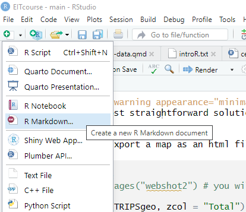
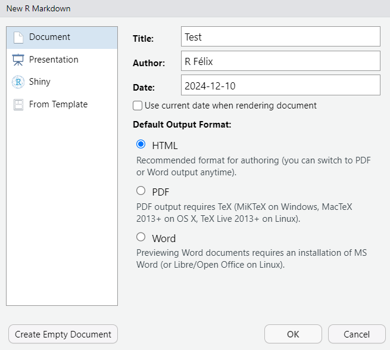
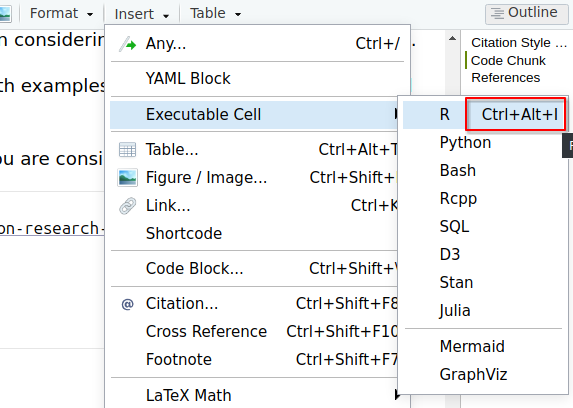
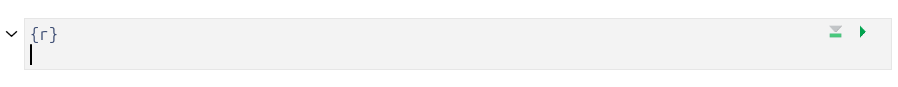
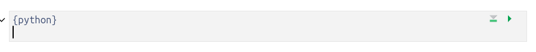
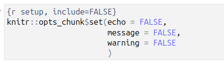

3 Using R Markdown
3.1 What is R Markdown
R Markdown is a file format for creating dynamic documents.
It is an R extension of the popular Markdown format, commonly used for writing and formatting text on the web, and incorporates R and Python code for statistical analysis, visualizations, and data manipulation.
The Rmarkdown document contains the text, the code and the results (figures, tables, or inline calculations), ensuring the analysis can be reproduced.
It allows to produce different output formats from a single file to one or more formats:
- HTML: Interactive and shareable reports.
- PDF: Print-ready documents, using LaTeX.
- Word: Editable reports
.docx. - Slides: Presentation-ready content using frameworks like
xaringanorioslides.
3.2 How it works
When you run render, R Markdown feeds the .Rmd file to knitr, which executes all of the code chunks and creates a new markdown (.md) document which includes the code and its output.
The markdown file generated by knitr is then processed by pandoc which is responsible for creating the finished format.
This may sound complicated, but R Markdown makes it extremely simple by encapsulating all of the above processing into a single render function.
See more at: https://rmarkdown.rstudio.com/lesson-1.html or Xie, Allaire, and Grolemund (2013) .
3.3 Example
Create an
.Rmdfile in RStudio, and use HTML as output.

Have a look at the template example and leave it as it is.
Save your new
.RmdKnit the document (click “Knit” in RStudio) to generate an output in the desired format.
Now, change it to pdf_document in the yaml
output: pdf_documentIt may take a while for the first time in your computer, due to the tlmgr packages it needs.
The next times will be smoother!
Open the output pdf.
3.4 Code Chunk
To load libraries, load your data, make your analysis, plot your results, you will need to include code chunks along your document. You can also use the Ctrl+Alt+i shortcut.

A code chunk in R will show up

You can change the language of your code chunk by changing it between the {}

If you want to suppress the messages and warnings, or to hide the code, you can set it on your first code chunk with

or chunk by chunk.
Above, we use five arguments:
include = FALSEprevents code and results from appearing in the finished file. R Markdown still runs the code in the chunk, and the results can be used by other chunks.echo = FALSEprevents code, but not the results from appearing in the finished file. This is a useful way to embed figures.message = FALSEprevents messages that are generated by code from appearing in the finished file.warning = FALSEprevents warnings that are generated by code from appearing in the finished.fig.cap = "..."adds a caption to graphical results.
See the R Markdown Reference Guide for a complete list of knitr chunk options.
3.5 YAML Header
Contains metadata such as the title, author, output format, and date. All your document settings, such as page size, table of contents, colors, and so on, live here.
Example of a simple YAML header:
---
title: "My Report"
author: "Your Name"
date: "2024-12-10"
output: html_document
number_sections: true
---3.6 Using bookdown
If you want to have more control of the contents of your pdf, for instance the heading numbering and figure numbering related to the heading (Figure 1.2), you may want to use bookdown instead of the simple pdf_output.
---
output:
bookdown::pdf_document2:
toc: yes
fig_caption: true
---Be aware that the yaml header is very very sensitive to spaces and indentations.